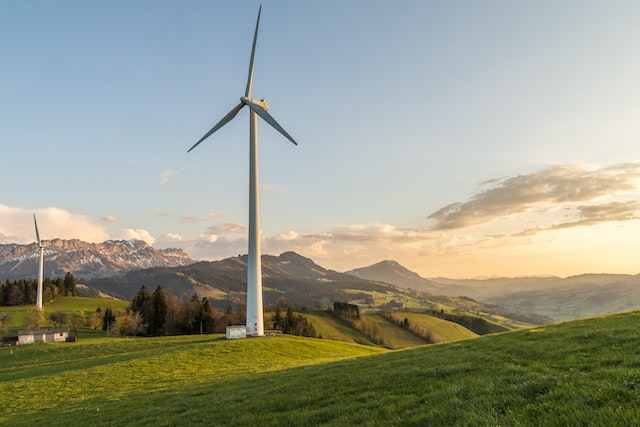
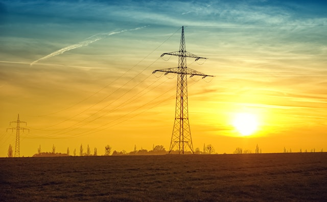
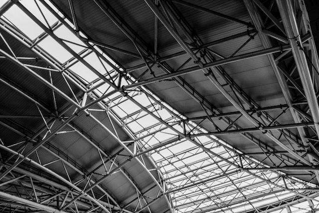

INSPECTION AND MONITORING
Drone inspection and monitoring is a game-changing technology that provides unparalleled access to hard-to-reach and hazardous areas. With a drone, you can easily inspect infrastructure, monitor equipment, and survey large areas from a safe and efficient distance, minimizing the risk of injury and reducing the cost of inspections. Whether you're inspecting a building, a bridge, or an industrial plant, a drone can provide highly detailed and accurate imagery that allows you to identify potential issues and address them before they become major problems. This not only ensures the safety and integrity of your infrastructure but also saves you time and money in the long run. Moreover, drones equipped with sensors and cameras can monitor environmental factors such as air quality, water levels, and wildlife populations, making them an essential tool for environmental monitoring and conservation efforts. With their ability to cover large areas quickly and efficiently, drones provide a cost-effective and accurate way to track changes in the natural world and respond to environmental challenges. Investing in a drone for inspection and monitoring is a smart decision that offers a safer, more efficient, and cost-effective way to maintain infrastructure and monitor the environment. So why wait? Take advantage of this revolutionary technology and enhance your inspection and monitoring capabilities today.


Wind Turbines
The wind energy sector utilizes drone inspection and monitoring to inspect and upkeep wind turbines. Technicians can employ drones outfitted with advanced cameras and sensors to obtain detailed images and information of the turbines and their constituents, enabling streamlined and productive inspections. Drones can access challenging-to-reach regions that would typically demand costly and time-intensive manual labor

Power Line
In the power sector, drone inspection and monitoring are employed to examine and upkeep power lines. Technicians can leverage drones equipped with high-resolution cameras and LiDAR sensors to obtain precise images and information of power lines and their constituents, promoting efficient and effective inspections. Drones can access challenging-to-reach regions that would typically demand costly and time-intensive manual methods
Air Pollution
Drone inspection and monitoring are employed to quantify air pollution levels in urban and industrial regions. Drones outfitted with air quality sensors can fly at low heights and acquire current data on the concentration of diverse air pollutants like nitrogen dioxide, sulfur dioxide, and particulate matter. This data can be utilized to produce exhaustive pollution maps of an area, enabling policymakers to detect pollution hotspots and formulate precise mitigation plansCrowd Monitoring
The deployment of drone inspection and monitoring has found utility in crowd supervision during events, concerts, and other public gatherings. Drones furnished with high-resolution cameras can obtain instant images and video footage of crowds, enhancing situational awareness and enabling timely detection of possible safety concerns. This technology can additionally be utilized to trace the movement of crowds and obtain information about crowd behavior, aiding event organizers in optimizing crowd control and security measures
